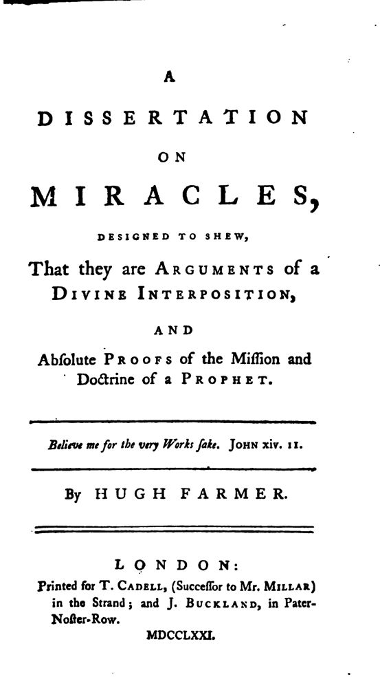
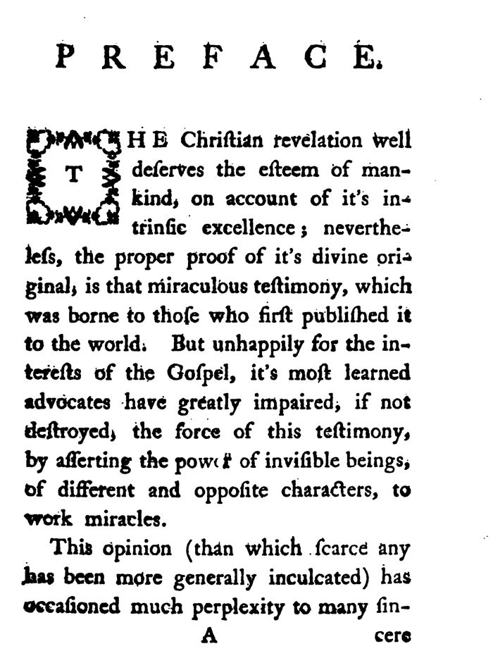

The purpose of the book (Preface, p. i)
English: London 1771, Preface, p. i, scan n13. Long s normalised. Highlighted: the position Lecky describes.


The Christian revelation well deserves the esteem of mankind, on account of it’s intrinsic excellence; nevertheless, the proper proof of it’s divine original, is that miraculous testimony, which was borne to those who first published it to the world. But unhappily for the interests of the Gospel, it’s most learned advocates have greatly impaired, if not destroyed, the force of this testimony, by asserting the power of invisible beings, of different and opposite characters, to work miracles.
This opinion (than which scarce any has been more generally inculcated) has occasioned much perplexity to many sincere …
Lecky (ch. II, note 13): “Farmer, who was a dissenting minister, desired to destroy the difficulty arising from the fact that miracles were generally represented as attesting both truth and error. He attempted to show that there were no such things as diabolical miracles of any kind.” A fair account of the book’s aim, which its preface states in these words.
Further down the rabbit hole
Sources that Lecky cites in the notes next to the ones that cite this page.
- Middleton, A Free Inquiry into the Miraculous PowersMiddleton’s exorcists and what Lecky altered in quoting him
- Locke’s Commonplace Book on Inspiration and MiraclesHume’s argument against miracles, seventy years before Hume
- Newman, Difficulties felt by Anglicans“The Nation being on its way to give up revealed truth”: a premise Newman went on to reject
- Augustine, De civitate DeiSeventy reports, not miracles, and a town, not a province
- Newman, Essay on the Miracles of the Early Ages“No presumption whatever against miracles” after the Apostles
- Locke, A Third Letter for TolerationLecky quotes Locke correctly on miracles after Constantine


Backlinks
Every place in Rationalism in Europe that links to this page (generated automatically when the site is built).
- Chapter II: note 13